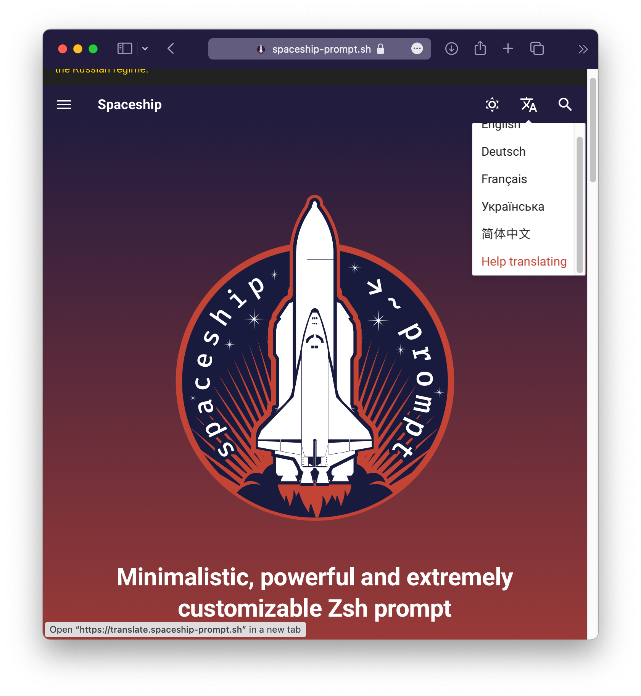

Setting up mkdocs-material
The mkdocs-static-i18n plugin aims at providing best-in-class support to the mkdocs-material theme and plugins users!
As such, it will do its best to automagically adjust the mkdocs-material theme configuration per language such as its lang and extra.alternates language switcher.
Tip
The mkdocs-material language switcher will also benefit from the alternate awareness of the plugin as it will contextualize the links of the language switcher to point to the language alternates of the current page instead of just pointing to the root the each configured language.
This will smoothen your users' experience as they will be able to switch from one language to another on the same page!
This feature is controlled by the reconfigure_material option and you can personalize your language builds even further using the languages options.
Option: reconfigure_material
| required | default | allowed values |
|---|---|---|
| no | true | true | false |
Adding a special item in the language switcher
If you want to add a special item in the automatically generated language switcher pointing to a fixed link, use the special null locale.
plugins:
- i18n:
languages:
- locale: en
name: English
build: true
default: true
- locale: fr
name: Français
build: true
- locale: null
name: Help translating
build: false
fixed_link: https://spaceship-prompt.sh/contribute/?h=trans#Translating

Features
Incompatibility
The navigation.instant feature is NOT compatible with the multi-language switcher. The plugin will issue a WARNING log if you try using it.
- Automatic language setup
- Automatic language switcher setup
- Automatic language switcher contextual link setup
- Search plugin localization and result deduplication
- Blog plugin localization